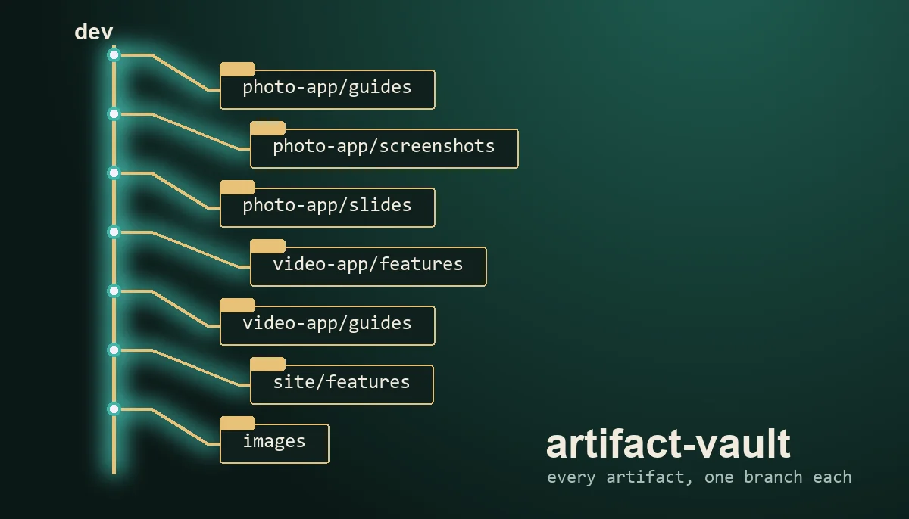

Agent skill · 1.0
Every Claude artifact, kept, sorted, searchable.

Copies every Claude artifact into one private git repo, one branch per app and kind (features, guides, screenshots, slides, docs) with an images branch for generated test pictures. Keys found in a page are replaced on the way in and reported by kind, never printed. Then it searches the vault and compares it against the current session, a requested feature list, an uploaded file, or the live artifact list. Zero dependencies: Node and git.
ingest sorts them into branches.Works in Claude Code and any harness that reads the SKILL.md format. The markdown is also plain docs, readable without an agent. Then ask: "Save all my artifacts into a vault."